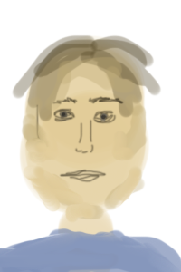
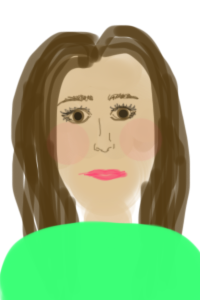
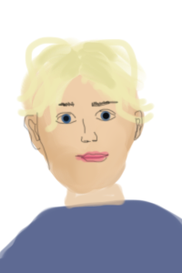

EDVIN RYDING
AMY DEASISMONT
THEO HARALDSSON
  SAM
MOA
ERIC
Sam, en 20 årig karaktär porträtterad av Edvin Ryding är filmens hjälte som står inför en komplex inre konflikt. Trots sin unga ålder har Sam en stark vilja och mod att möta överväldigande utmaningar. Karaktären balanserar mellan lojalitet mot sina vänner och det ansvar som krävs för att konfrontera det övernaturliga hotet mot Norrköping. Edvin Ryding ger liv t Sams karaktär genom att framhäva dess känslosamma djup och envishet i en film där vänskap och mod sätts på prov.
Moa, den 22-åriga karaktären spelad av Amy Deasismont, injicerar filmen med en rebellisk energi. Hon utstrålar en självständighet och kant som skapar en stark kontrast till det övernaturliga hotet. Amy Deasismont skådespel ger liv åt Tove med en stark attityd och en vilja att utmana normer. Tove står inte bara emot det övernaturliga hotet, utan utmanar även förväntningar och konventioner, vilket ger en dynamik och intensitet till filmens narrativ. En karaktär som inte bara kämpar för vännerna och staden utan också för sin egen frihet och individualitet.
Eric, en 18-årig karaktär gestaltad av Theo Haraldsson, utmärker sig genom sin ungdomliga entusiasm och äventyrslystnad. Trots sin ålder visar Eric en oväntad mognad när han ställs inför de utmaningar som det övernaturliga hotet presenterar. Theo Haralddsson skådespel ger en dynamisk dimension åt Erics karaktär, där han navigerar mellan ungdomlig glädje och en djupare, modigare sida när vännernas och Norrköpings öde står på spel. En karaktär som bidrar till filmens intensitet och spänning genom sitt unika bidrag till gruppen.
Edvin Ryding är ett välkänt ansikte som bland annat är med i succéserien Young Royals. Läs mer om honom HÄR
Amy Deasismont har tidigare haft världskända artistnamnet Amy Diamond och har dessutom varit med i succe serien Thunder in my heart. För att läsa mer om Amy klicka HÄR
Theo Haraldsson har artistnamnet Theoz med många följare på intagram och tiktok. Det här är hans debut i skådespelarvärlden. Läs mer om Theoz HÄR
ÖVRIGT
MINDRE ROLLER
Övriga rolller är Marcus och Martinus Gunnarsen som det otäcka monstret i Strömmen, och föräldrarna spelas av bland annat Peter Stormare, Pernilla Wahlgren, Mia Skäringer, Johan Rheborg, David Hellenius och Linda Bengtzing. Dessutom medverkar fler kända ansikten såsom Fröken Snusk, Harry Styles och Stellan Skarsgård. Läs om alla roller och statister HÄR.